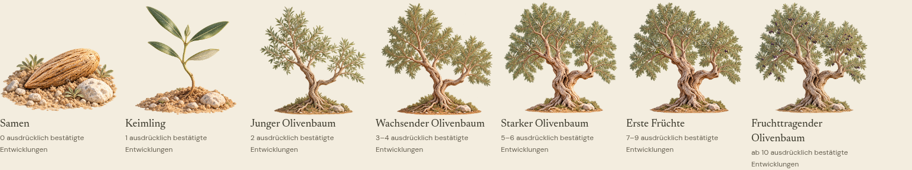

FaithPath · Lichtkrone · Freigabevorschau
Eine lebendige Baumfamilie.
Der freigegebene A.4-Master bleibt erhalten. Sechs abgeleitete Motive und stärkerer Dauerwind liegen zur Designentscheidung vor. Keine App-Integration und kein Deployment.
Neue Bewegung gegen bisherige Animation
Links: A.4 endet nach acht Sekunden. Rechts: Wind läuft während der tatsächlichen Aufnahme weiter. Echte Browseraufnahme; keine Geräteabnahme.
Alle sieben Stufen

Stufen 5, 6 und 7 bei 200 CSS-Pixeln vergleichen

Mobile Aufnahme
Selbst ausprobieren
Diese statische Startseite ist für Dateiöffnung vorbereitet; die verwaltete Testumgebung blockiert file:// allerdings per Browserrichtlinie. Verifiziert ist der folgende lokale HTTP-Aufruf. PDF, Bilder und MP4s liegen zusätzlich separat vor. Für die interaktive WebGL-Galerie bitte im Ordner einen lokalen Server starten:
python3 -m http.server 4735 --bind 127.0.0.1
Danach http://127.0.0.1:4735/ öffnen. Keine Internetverbindung notwendig. Die Sicherheitsregeln des Browsers für file:// nicht abschalten.